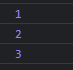
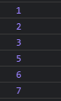
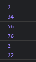

Break - Continue
1.- Break
Detiene el bucle cuando la condición se cumple.
Usando:
const numerosBreak = [1, 2, 3, 4, 5, 6, 7];
for (i = 0; i < numerosBreak.length; i++) {
if (i === 3) {
break;
}
console.log(numerosBreak[i]);
}

2.- Continue
Elimina la posición y continua con el bucle normalmente.
Usando:
const numerosContinue = [1, 2, 3, 4, 5, 6, 7];
for (i = 0; i < numerosContinue.length; i++) {
if (i === 3) {
continue;
}
console.log(numerosContinue[i]);
}

3.- Ejercicio
Valores que sean divisibles para 2 con el módulo, ejemplo: 34 % 2 = 0, por lo que se imprime, cosa distinta sucede con: 63 % 2 = 1, por lo que elimina y continua
Usando:
let nums = [1, 2, 63, 34, 56, 345, 76, 2, 67, 22];
for (let i = 0; i < nums.length; i++) {
if (nums[i] % 2 === 1) {
continue;
}
console.log(nums[i]);
}
